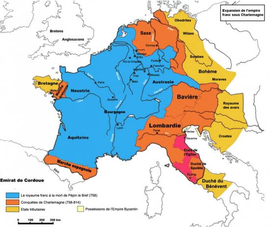
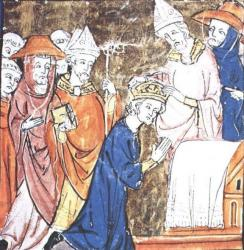
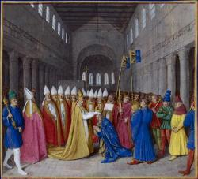
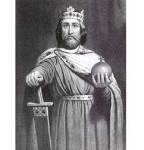

MACLASSE.COM

Pépin le Bref devient roi des Francs en 751, signant la fin de la dynastie mérovingienne. Il continue la politique d'expansion initiée par son père Charles Martel, alors maire du palais (sorte de premier ministre de l'époque). A la mort de Pépin le Bref en 768, Son fils Charlemagne devient roi à son tour. Il continue d'étendre le territoire franc jusqu'aux portes de l'Europe centrale.
Charlemagne développe le christianisme dans tout les pays conquis et renforce le pouvoir de l'Eglise dans tout le royaume. Pour le remercier, le pape sacre Charlemagne Empereur en 800.
Texte officiel de l'Église de Rome : Tous se réunirent dans la basilique à l'occasion de la fête de Noël, le 25 décembre. Le pape couronna de ses propres mains le roi en lui posant une couronne. Alors la foule massée dans l'église Saint-Pierre de Rome s'exclama : « À Charles très pieux, couronné par Dieu, grand et pacifique empereur, vie et victoire ! » Cette acclamation se fit entendre trois fois. Immédiatement après, le pape mit de l'huile sainte sur le front de Charles.
D'après le Livre pontifical, 800.
 Pour gérer son immense Empire d'Aix la Chapelle dont il en fait la capitale, Charlemagne le divise en plusieurs comtés. Des seigneurs sont chargés de les administrer. Pour vérifier que les comtes respectent bien les lois en vigueur et pour collecter les impôts, Charlemagne envoie des missi dominici.
L’empereur Charles a choisi les hommes les plus avisés et les a envoyés dans tout le royaume. Il leur a ordonné de se renseigner activement et de l'informer sur les pratiques contraires à la loi. Que personne n'ose s'opposer à la loi en vigueur. Que les comtes veillent à ce que les missi puissent aller à travers leur domaine sans être empêchés, s'ils veulent conserver la faveur de l'empereur.
D'après le Capitulaire des « missi dominici », 802.
L'Empereur d'Occident Charlemagne meurt à l'âge de 72 ans à Aix-la-Chapelle. Son fils Louis le Pieux lui succède avec le titre impérial.
Charlemagne laisse son nom à la dynastie des carolingiens alors qu'il n'en est pas le fondateur.
As-tu compris et retenu cette leçon? Es tu capable de répondre à quelques questions?
- Quel est le premier roi carolingien ?
- Qui donne son nom à la dynastie carolingienne ?
- Cite trois conquête effectuée pendant le règne de Charlemagne ?
- Que se passe-t-il en 800 ?
- Qui est chargé de vérifier le respect des lois et de prélever les impôts ?
Charlemagne devient roi en 768 et donne son nom à la dynastie carolingienne fondée par son père Pépin-le-Bref en 751. Il conquiert de vastes territoires où il impose la religion chrétienne. Le pape le sacre Empereur en 800. Des missi dominici sont envoyés dans tous les Comtés de l'Empire, pour vérifier que les lois de Charlemagne y sont bien respectées et pour collecter les impôts.


Mentions légales / Qui sommes-nous ? / Plan du site
Nos matières : français - mathématiques - histoire - sciences - arts visuels - geographie